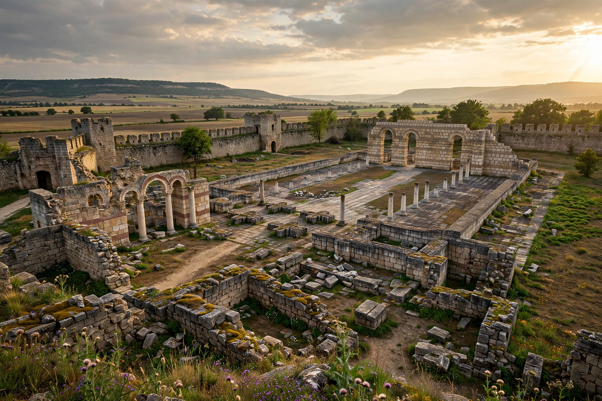

Pliska was the capital of the First Bulgarian Empire between 681 and 893 AD. The Bulgarian capital before Pliska was Ongal. The ruins lie 3 km north of the modern village of Pliska in Shumen Province, Bulgaria.
| Pliska | |
|---|---|
 | |
| Location | Shumen Province, Bulgaria |
| Capital | 681–893 AD |
| Founded by | Asparuh tradition |
Founded after Khan Asparuh founded Bulgaria south of the Danube, Pliska covered 23 km². It was sacked by Byzantine emperor Nikephoros I in 811, who was then killed at the Battle of Pliska (Varbitsa Pass). Under Boris I, Bulgaria Christianised (864) and the Great Basilica was built. In 893 Simeon I moved the capital to Preslav.
Excavations revealed a fortified inner city, palaces, churches and water systems. The site is now a national archaeological reserve with a museum.